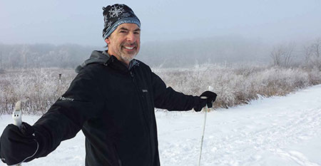
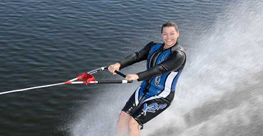

-
Bill Graham
Founder & CEO
Bill has been a relentless advocate for captioning since becoming deafened as an adult. He co-founded the Association of Late-Deafened Adults (ALDA) and has served on numerous national boards and committees related to captioning and disability, as well as the Gallaudet University Board of Trustees. He also spent a decade as a manager at Microsoft Corporation. He’d be a cross-country ski bum if he had the time. -
Karen Graham
Manager
Karen has headed both non-profit and private organizations that promote access and independence for deaf and disabled groups. She served as CEO of SignOn, a company that provides communication access for deaf people throughout the country. Karen also founded and directed Thresholds Bridge for the Deaf, a community-based psychiatric program. She knows how to navigate the most challenging waters. -
Karen Putz
Marketing
Karen is a motivational writer and speaker on such topics as self-realization, passion, and parenting. Her books include Gliding Soles: Lessons from a Life on Water, The Parenting Journey: Raising Deaf and Hard of Hearing Kids, and The Passionate Lives of Deaf and Hard of Hearing People. In her spare time, Karen competes nationally as a barefoot waterskier. Seriously. -
Larry Littleton
Marketing
Larry lives on the island of Kauai and is the only Nationally Certified Deaf Interpreter in Hawaii. He is an outspoken advocate for people with disabilities and a world-traveled motivational speaker. A SAG-AFTRA member, Larry occasionally lands cameos in movies filmed in Hawaii. He rides a Harley and grows papayas in his back yard. Just so you know. -
Terry Hockett
Finance
Terry is a deafened military veteran with more than 25 years of experience across all aspects of financial and operations management. His clients have included HSBC, Brunswick Corporation, LG Electronics, and Orval Kent Foods. He claims to be the ONLY reason CaptionAccess survived its first 18 months as a start up. We call him The Bean Counter. -
Susie Holcombe
Administration & Captioning
Susie is a realtime captioner who also handles a myriad of administrative jobs for CaptionAccess, including scheduling assignments, interacting with customers, and mentoring other captioners. An avid cyclist, Susie lives in northeastern Oklahoma, where the wind is always at her back. Except when it's not. -
IT & Engineering
We tried to coax our support, systems, and software people to the camera with Mountain Dew and Cheetos. Unfortunately, they refused to come out of the basement into the burning sunlight, but they're there!
“Technology is changing the way people receive information and the way people are trained and educated. When educational webcasts are not captioned then people who are deaf or hard of hearing don’t have the same access or the same opportunity to learn that people who can hear do. It's so easy and inexpensive to get webcasts captioned — If webcasters knew how many more people they could reach with the simple addition of captions, it would seem a no brainer to add them. CaptionAccess is unusual among captioning companies in that it advocates and educates for online inclusion in addition to providing services to make it happen.”
“It has been a pleasure working with CaptionAccess. SIU requires the use of remote CART services for both an online student and a student onsite. CaptionAccess delivers first-rate captioning services in a professional, dedicated manner. They are easy to work with and have gone above and beyond the call of duty by traveling to the classroom to provide technical hands-on assistance. We would recommend CaptionAccess to any school that requires the use of all-around quality captioning services.”
“CaptionAccess has provided captioning for deaf and hard-of-hearing participants for all Inside Higher Ed webinars since September, 2012. We do as many as four a month, on topics that range from the arcane (competency education and assessment) to the REALLY arcane (game design elements in online course development). We can have as many as four presenters talking over each other in fast-paced events. CaptionAccess does a fantastic job -- captioners are scheduled quickly, show up on time, do a wonderful job during the live event, and provide transcripts in 24 hours (often less). The good will Inside Higher Ed has accrued by providing this simple (and very economical) service is enormous. And CaptionAccess is a genuine pleasure to work with.”
“As filmmakers, it is our primary goal to connect and effectively communicate with our audience, which is why we chose CaptionAccess to caption both our movie trailer and our feature documentary, "I'm Fine, Thanks." Without captioning, we are limiting the effectiveness of our storytelling. We see captioning as an essential piece in our storytelling arsenal and CaptionAccess made this additional tool very successful for us.”
“CaptionAccess has opened my eyes to the value of captioning, transcribing, and generally making the work I do online more accessible. By providing access, I'm getting deaf and hard-of-hearing people signing up for workshops and events they never could have signed up for before… which means more sales, which means more income. Consider me sold!”
“CaptionAccess patiently walked me through the set up with two practice sessions before my meeting. CaptionAccess and the writer were flexible, friendly, and continually helpful. All was done affordably. I feel I can contact CaptionAccess anytime with a difficult captioning project on short notice and they will be there for me.”
“Industry leaders across all private, public and non-profit sectors express a commitment to diversity, but the principle is often overlooked when applied to people with disabilities. A prime example of this oversight is non-captioned videos and webinars, which send potential consumers, customers, and partners the message: "you are not wanted here." As more of us acquire the tools to produce online content, it is critical that we integrate captioning into our programming. This will benefit not only people who are Deaf and hard of hearing, but also people learning English, children learning to read, airport travelers, and many others. Like many things related to accessibility, what works well for people with disabilities, works well for just about everybody.”
“CaptionAccess really makes a difference for deaf and hard-of-hearing employees. Their services open communication to one of the most important aspects of work: meetings. And I think it’s a bonus that the company is owned by a deaf entrepreneur. Employers have every reason to use their services, and I recommend that they do.”
“Corporate meetings are costly and it's best to have everyone on the 'same page' to maximize productivity and meaningful exchange among all there. Inclusion of CART is so useful for the group, since participants can maximize their various skills while having the transcript to review after the meeting too. Companies like CaptionAccess provide vital services for millions of people who need captioning for communication.”
CaptionAccess has received Disability-Owned Business Enterprise Certification through the US Business Leadership Network® Disability Supplier Diversity Program® (USBLN® DSDP®).
Captioning the world, one word at a time.
-

2707 Three Oaks,
#942, Cary, IL 60013 -

(847) 986-9330
-

contact@captionaccess.com